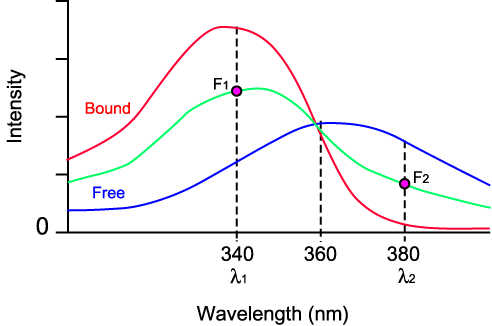
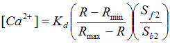
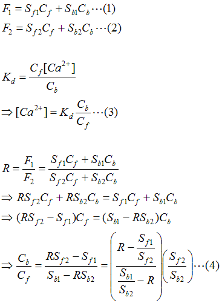
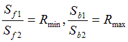

Reference: Grynkiewicz et al, 1985
|
Fura-2 Excitation Spectra  |
 F1, F2: Fluorescence Intensity at λ1 and λ2 R: Ratio (F1/F2). Rmax: Maximum Ratio when all dyes are bound. Rmin: Minimum Ratio when all dyes are free. Sf: Proportionality Coefficient (Free) Sb: Proportionality Coefficient (Ca2+-bound) Cf: Free Dye Concentration Cb: Ca2+-bound Dye Concentration Kd: Dissociation Constant |
 Since  (3), (4) => |